Andrea and I didn’t talk about the text on the webpage during this week and we both did individual thoughts. Today I started to write all these thoughts, because I like words and I think it’s important for us in a sense explain what we do. You know, PR.
So after a lot of thinking, which maybe we could’ve done earlier, we both feel quite strongly about just taking a picture of the business card or the written information that is on the business card and put online. In a sense this is the most true to whom we are. I have a nagging feeling it’s important with the labels if Demeter and low intervention wine but in the end it’s a smaller feeling.
We started to think that this is something we could have written on a paper in our menu board [instead], maybe colored green like the terrazzo. And this is not a rush for us.
Labels can be helpful and important for people that want directions and guidance. But I don’t think for us.
And maybe it’s a smart PR move to write and explain what we do and who we are but this is what we would like for now. Only the information that we have on the business card. Either as a photo or text. There we trust you both what you think would look best.
Thank you again.
We can also call about this tomorrow if it is needed. I’m free most of the day.

Andrea + Samuel